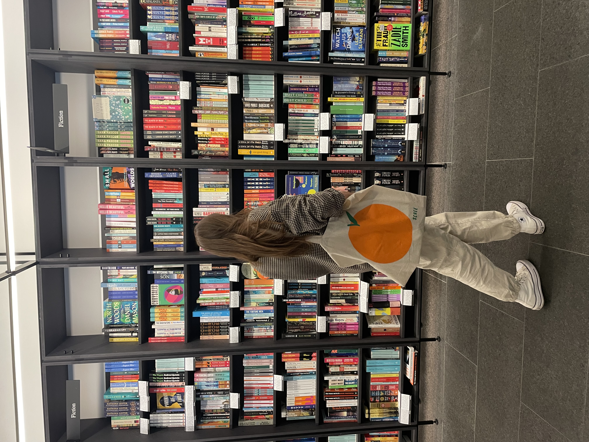
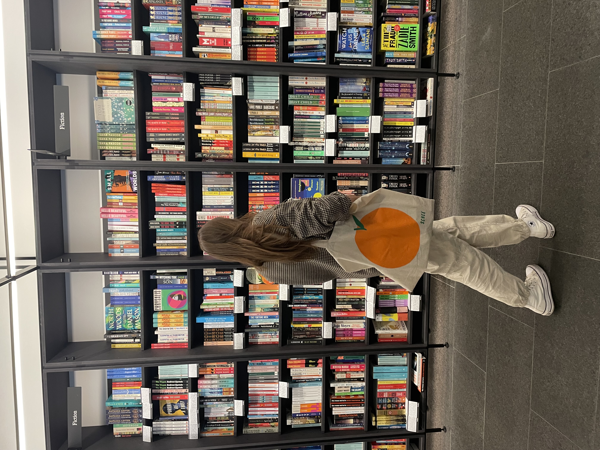
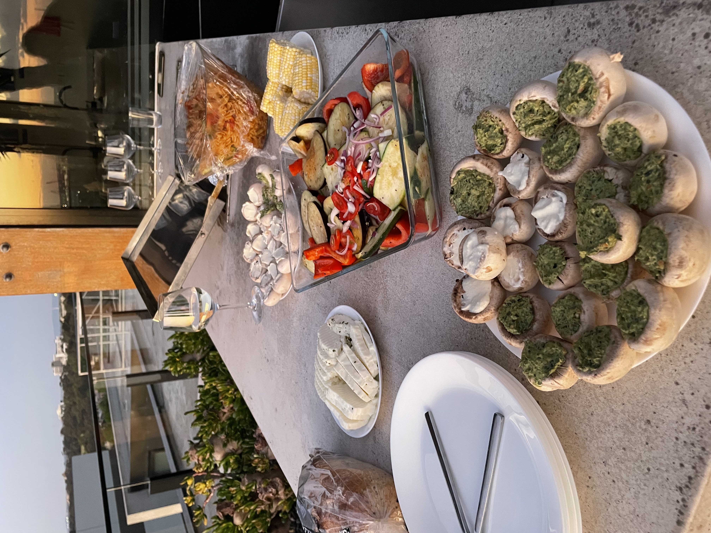
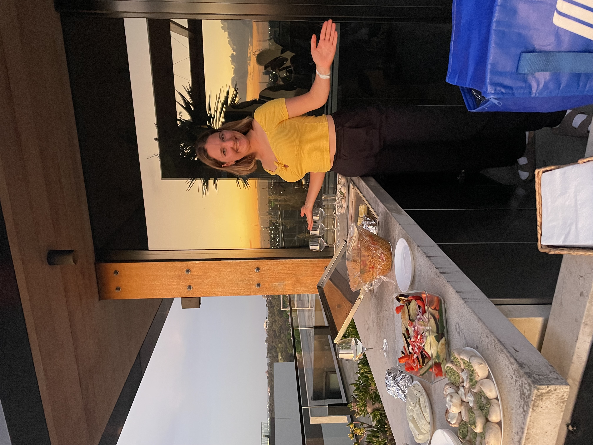
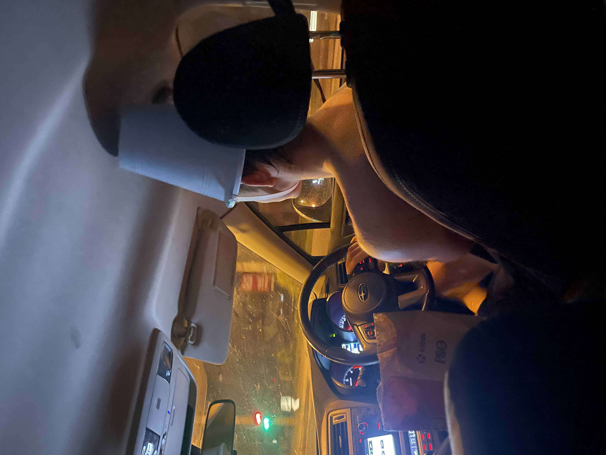

My flight landed at 6:30 am so I started my internship with having the whole in Melbourne directly. But then it took me kind of forever to get to our flat. Firstly I could only pay with card for the busshuttle that drives to Melbourne and apparently my code for my creditcard was the wrong one + my other card did not work. So I went up to a woman that worked there and asked for help, but since it was absolutely not possible to pay with cash or over a website with paypal etc, in the end they just let me in for free, which obviously was very kind of them! I arrived in Melbourne probably 20 min later and then had to find the flat and make my way through public transport and by accident went of a wrong station and then had to wait for the next tram to arrive. I managed to arrive at the flat around 11 am, shortly ate something and then we directly walked into the CBD and the Botanical Garden to just stroll around the city. In the evening we watched a bit TV together and then finally Jetlag hitted and I nearly fell asleep on the coach.
My first weekend started with 27°C on the Saturday, so the perfect temperatur to go to the beach. Viki looked up Brighton Beach and since it was only a 30min drive to go there with public transport, after our run we packed our stuff and directly went there. It was a very relaxed day with a lot of reading and Viki and I even went to the sea (but only for a few minutes because the water was still reaally cold!). We stayed until the evening to watch the sunset.


In the evening we decided to go out for a beer to the an Irish pub Viki and Laura discovered on their way to work. On that same day, there was also the final of a big football (?) game and so most people were completely drunk and wore fan-clothes. I can't really understand how thex can afford to get drunk though, we were in complete shock when we heard how much one beer costs: 12AU$!! So probably this half a year will be pretty sober for me. The bar was also half a club so we could dance to music from 2012. We only stayed until midnight though because after that long day we were really tired.


When Ronja and Christina arrived on Saturday last week, they were really jetlaged and so they did not join our trips. But this Saturday we went brunching together in a really cute café that was in a small street with small buildings directly next to the CBD so you could see the skyscraper in the background, that looked absolutely amazing!


The food they had also was really good, Laura, Viki and I stared three meals with each other to try as many different things as possible. We also drank a really good cappuccino and then got another flat white to go (which then turned out to be too much coffein for me but ufff the coffee here is so much better compared to Germany), because they add a bit too much milk in the cappuccino so flat white is the perfect choice here! Also in Germany getting a flat white is more expensive then a cappuccino but here it isn't.
While the café itself was really pretty, while ordering the second caffee we noticed a strange book which only topic seemed to be about how to have a toxic relationship...maybe it was suppost to be a parody of how men behaved in relationships years ago? So some kind of feministic approach to show the reader how absurt that behaviour is?.

Afterwards we strolled through the vity, went to different vintage shops and to a really nice library. I bought a new blouse and some sunglasses and got some inspiration for new books. What I really liked is that they had many proposed books about different ethnetics and how living in Australia is then. Also a lot of stories about racism etc.

 

Since we all did not sleep enough the last night (Thanks to iGEM Deadline) we started our Friday evening with watchen TV shows together (I showed them Grace and Franky) and then continued with drinking some wine. Laura and Viki managed to meet a girl (Vera) at their lab who recently started her master thesis and will stay in Melbourne for half a year. She and her roommates were going to a Bachata club and asked if we want to join and although nobody of us can dance bachata we decided to go their to awkwardly stand at the side of the dance floor and try to not interact with people so they would not dare to ask us out for dancing. We still managed to meet another friend of her (Kathi), which she already new from Zürich where they both study and then had a really good evening with both of them. Vera also climbs so we sad that we will need to go there together at some point and she invited us for movie night next friday. Kathi is doing her bachelor thesis right now but also at Clayton Campus, so the same area I am in, so I finally know somebody who is also going there!! We already sad that we need to have lunch together at some point or go for a coffee!


We decided to go catch the bus at midnight because we were still sleep deprived and just when we wanted to go we recognized that our jackets were missing - perfect timing for the Friday 13th. We looked around for a while but could not find them and so in the end we had to leave without them and just hoped that somebody just moved them away and if we would call them the next day we would get them back (Spoiler alert: We did get them back the next day!). But so we had to go back to our flat just with T-shirts which was more okay then I thought, but still too cold.


On Saturday we just slept in for the first time, which resulted in Viki and me beeing awake between 9-10am and Laura joining at 12:30 (but she instists that she was already awake before that, ate something and then went back to sleep). We just relaxed in our flat a bit and then went to the Keepers and Finders Market Viki had discovered somewhere in the internet and also met there with Vera. I then talked to her a bit longer for the first time and we said that we need to go climbing together at some point and also that she probably will join Ronja, Fabi and me for Sydney during Silvester. Now we just have so find an airbnb that is nice and doesn't cost crazy amounts of money.
This market was all about small artists selling their stuff and it was really nice to look around and see all the different things. Also the market itself was placed in a kind of church, so the building itself was really worth looking around.


Today after work we directly met with Kathi and Vera at the Queen Victoria Market to stroll around and buy some food. Viki sadly didn't join us, because she still needed to work on her introduction which she has to submit by friday. She really is stressing about it a lot because her supervisor has a lot of knowledge about writing papers and gives good but also strict feedback. But it is defentitly a chance for a very good feedback.
Victoria Market is really crowded and most of the stalls are for food, but we also found some nice jute bags with drawn pictures of Melbourne / Queen Victoria Market and Laura and I bough one each (we were already searching for some bags before seeing them). Afterwards we decided to share a lot of food so we could try as much as possible an in total tried 4 different dishes and then also dessert. Everything tasted really incredible so we definitly have to come back another time with Viki! We also bought some garlic-cheese-buns for Viki to take them home with us.


Right before buying the dessert something weird happened: We were just casually walking and chatting with each other when suddenly some guys approached us and would not stop talking to Laura and me. They were kind of funny but I think also trying to hit on us and so it was also really uncomfortable. Also they just completely ignored Vera and Kathi so I felt like they only wanted to approach as many people as possible, very weird. Laura told me that the guy that talked to her was really funny and it was in a more friendly way. But then in the end he kissed her on her cheek to say goodbye so I am not quite sure about it.


Vera is living in a students housing and apparently it is not only located directly in the CBD, but also very fancy and they can do a lot of stuff there for free. And she is allowed to bring friends! This friday there was a free cinema-evening with the movie 'Barbie' that was really hyped the last months, but I had not seen it so far, so it was already on my watch-list before. We bought some snacks and a bottle of wine and then just sat down and watched the movie together.
After the hike, I directly went home with Mitch to eat / drink something. He lives in a house together with three other roommates (I got to know two of them) and I really enjoyed beeing in a shared-house in Australia for the first time. Here the contracts that you get a very weird and always only fpr one year and you are not allowed to hang anything up, so the house itself looks very clean. I am really grateful that we don't have those stupid rules in Germany because then the house just looks really unpersonal. But they had a lot of Alkohol standing around in the kitchen and for dinner we ate very spicy instant rahmen (I cried but it was still very good), so it still felt like beeing a student a bit.
ALso the bad is very weird because they have and open shower and the window is directly at the same side as the shower, so you can only shower with closed curtains, or everyone on the street will see you naked. And the street is a huge one.
The roommate that works in a bar then gave us a lift to the bar he works in, and also brought us 1l of beer for free (which was served in a "Krug", that Australians call "Stein" and please don't ask me why, I have no idea) and some Brezels, where they told me that they would be really good and they also were really good but just tasted nothing like Brezels at all. I thought we would pay for the rest of the beers ourselves, but then Mitch just wrote his roommate what he wanted and he always ordered it for us over his phone, while not even beeing there himself.We talked about various stuff and then played some rounds of"SHUFL", which I had never heard of before and then at midnight decided to leave. And then I found out that there is no public transport in the middle of the night in Melbourne (why though, it is a 5 Million inhabitants city?!) and so I slept on Mitch's couch in the living room. Which was really okay, but then in the night somebody else came home who apparently also had wanted to sleep on the couch and then he had to sleep on the ground. I still feel a bit sorry for him, because the coach is really huge enough to fit at least two people, maybe even three.


Viki is really good in finding interesting stuff to do in Melbourne somewhere in the deep depth of the internet, and so today we met with Vera again and then went to the 'LUME', a digital art gallery in Melbourne that changes topics every few month. This month the topic was indigenous art and while sadly I did not have the time / energy yet to inform myself better about the history of Australia so far, we all are very interested in it. The entrance was 39$, but it was absolutly worth it. In general it was "just" one very big room with a lot of different screens and possibilities to sit / lie down and then indegenous music was beeing played and videos of the art were shown. You really felt like you were sitting in the middle of the art and it was really relaxing (since I didn't have enough sleep, I also napped there for a view minutes). There were also some smaller rooms with gallerys and explanations about it, but the main attraction was the room with the videos. In total we stayed 2.5h and then Viki and I bought a water bottle (because already before I was searching for a smaller one to take with me) with the art on it. Now I just need to crochet a bag for it, so this will be the next bottle that I can with me in the summer.


This evening, I met with Justin, a guy that came up to me last week at clayton campus to compliment my outfit and then told me about nice areas in Melbourne and that he would show me the area. We met at Flinders Station and since he doesn't have a profil picture I was really afraid that I would not recognize him, but when he arrived he directly smiled at me so it was easy luckily. We then firstly went around the CBD and he should me a good place to eat Udon Rahmen for only 6$ and then we drove to Fitzroy, which is the student part of Melbourne and you could really directly see that. There were so many bars and restaurants and street art and also a lot of people. And no clean skyscrapers, but instead normal and sometimes pretty old buildings.
We bought a bottle of red wine and asked for paper cups in a near coffee shop and then just walked though the streets, drank wine and he should me all his favorite sports. I sended myself locations of the best ones, but after a while I could not remember anything anymore, because it was just too much to remember all of it. But he told me that each Saturday is an art market in the area, so I think it would be amazing to go there at some point.


Today was Ronjas Birthday and she invited all of us to celebrate it with her on their roof top terasse. They prepared stuff for barbecue and we all also brought some food and wine and made a cake and then just had a nice evening together. As a gift, we made her a card to invite her to Queens Victoria Market on the 22nd of November and of course Viki and Laura had been very creative with what to write on it.
 
I stayed until 11:15pm and then pannicked and tried to go home as fast as possible, because I really had to wake up early in the morning and because I was to excited, I took the wrong Tram (59 instead of 58) and then drove 40min into the wrong direction. It took me until 1am to be back in our flat and go to sleep.
After beeing in bed by 1am, I somehow still managed to wake up at 6am again (my watch says that I had 4h50min of sleep) and directly took the next train in the direction to university, where Will and Jono picked me up to have some coffee together. We drove back to their place (which is really cute but also very chaotic and dirty haha) and Jono made us all some coffee with a coffee machine that costs exactly the amount of money that I have left on my bank account right now (crying in poor student). I even got a second one to go and then they drove me to the campus. Since it was a public holiday for everyone except Monash University, they were in no hurry so that was pretty nice.
The lab took until 6:30pm today and the boys picked me up directly afterwards and also already had cooked dinner. When we arrived at their home (it is only a 5min car drive) I directly went to Will's bed and tried to sleep for 15 min. It did not work sadly, but I still felt way more rested and so we had dinner, Will and I drank some Gin and then we went to pick up Marcus and Phebe (a friend who is visiting him right now). Oh and of course Jono drove, because he never drinks.
They got into the car and then we went back to Will and Jono's place again to drink some more gin. Afterwards we went to a gaming-pub where we played some Mario Cart (and I was really bad) and the whole time I was so tired that I did not only struggle with my english, but even couldn't remember some german words. So I just laughed from time to time and let them talk to each other most of the time (wich was not particularly hard because they all talked A LOT). Phebe also lived in Melbourne and climbed at La Roca once, so they did know each other for a while now and you could really see that.
Of course the topic of midnight swims came up again and so we picked up swimwear from Marcus and Phebe and then drove to the Ocean to go for a swim. It was actually a lot warmer then in the Grampians so we could stay in the water for quite a while. Then Marcus found a bucket and put it on Jono's head and it fit extremly well, so of course he kept it on. And of course he wanted to dry without a Tshirt on again (which loooked really funny in the car) and so we went to the McDonalds Drive through and he ordered food and a happy meal (to get me a game & I guess because the childish-jokes never stopp) and all of it of course while still wearing the bucket. Both of the workers managed to not laugh at us but one really struggeled to keep the professionality up (I think I would just have laughed in her position, I think interacting with costumers is a good thing).

Last stop was 'La Roca', originally because it is the only place with a hairdryer (which thought I would need, but then it was warm enough to dry on its own), but then it changed to Marcus and Jono trying to campus as much as possible without a Tshirt but still with the bucket. And Marcus beeing a little bit drunk. His quote of the day: "I drink to do stuff like that" (maybe it was also the less child-friendly version "shit like that", I don't remember). I think he was the only one beeing tipsy though, because he continued to drink gin shots in the car and most of us stopped.
This day was really hard to order to my digital diary because it involved beeing in Melbourne, running and going to Peninsula again. But since this chapter is kind of for everything that happens close to Melbourne and doesn't fit somewhere else, I will put it here.
After a week with absolutely too less sleep, I wanted to have a chill friday evening and since it was 32°C, beach sounded like a great idea. I got picked up by Mitch at a train station and then we ran for 6 km along Brighton Beach (which was absolutly stunning) and nearly died because of the heat. So we went for a swim afterwards and then drank a beer and watched the sunset - so all in all just amazing! Mitch and his friends acutally are brewing beer as a hobby and it was one of his. And as a german everyone always wants me to judge beer.
Then Will and Jono joined and we went for a second swim (which was a lot colder because the sun had already setted and we were not completely overheated because of the sun anymore). Then Mitch went back home to celebrate the end of his roommate's examens and we got some Pizza and ate it in the car on our way to Mornington Peninsula (where we spontaneously decided to go to). Of course it all started with Jono suggesting it as a "dumb idea" but when he then offered that we could sleep in the car and he will drive us, I of course was in.
To get to the spot where you can actually jump of cliffs (4m, 6m and 8m if you trust the internet), you have to climb over some rocks and then there is one big rock really close to the beach which you can climb and jump of. This is only possible, because there is a big rockhole directly next to it and so it is deep enough. But it still feels very crzay to be able to just jump into the water beeing so close to the beach.
We had to use headtorches to even be able to climb the rock and then could watch the stars while jumping into the ocean, that was amazing. I did not dare to jump from higher than the 6m spot though, because for the 8m spot you have to jump to a certain direction to perfectly hit the rockhole and I did not trust my jumoing abilities enough.
And Will even managed to jump so wrongly, that he hit the later with his legs and ass and got completely bruised. But we still all had a lot of fun. Afterwards Jono drove us back home and Will and I slept in the car the whole time. And then I went to bed directly to at least catch a few hours of sleep before I had to get up for Phillips island again.
After we all loved the cliff jumping spot so much on Friday, we decided to go there again during the week, but for sunrise instead. So I stayed over at the boy's flat and we got up at 4 am, made some coffee and then directly drove off. We actually managed to be there for sunrise, but the weather was not that good, so it was more a "oh now we are starting to see something" than actual sunrise. This time Will did jump correctly, so we were all happy, but sleep deprived. Going to the lab on a Wednesday morning with salt water in my hair felt absolutly amazing though and also exactly how I envisioned my life living close to the sea.
We had a very classical evening this friday and actually went out to a bar for a drink. Laura, Viki, Kathi and I met for dinner before, and we went to the cheap Rahmen place that Justin had showed me. Since Vera lives in the middle of the CBD, we afterwards went to her place and had some wine and so arrived pretty late at the bar. Here we met with Christina, Ronja and Mitch and just ordered a drink and chilled a bit. I somehow was really tired though and it was pretty hard for me to not fall asleep. I still enjoyed the evening and the bar also had a rooftop from which we could watch the city in the middle of the night, that was pretty cool!
We started the Sunday with finally sleeping enough and then went for a walk with Jono's parents + Chris (his brother) to Lysterfield, like the first Sunday when I arrived here. This time it was a lot faster though, because we did not stop to take pictures every few seconds, not even for kangaroos. That is the official sign that I got used to living in Australia I guess. It was really nice meeting Jono's parents again though and afterwards they invited all of us for breakfast and coffee to a cute café and I got the most delicious but fatty sandwiches with a lot of cheese and mushrooms.
Afterwards the boys dropped me off at our flat and I showered and then went straight to meet the other girls (Viki, Laura, Kathi and Vera) in the CBD for afternoon-snack/dinner. They had already went yesterday to a dumpling market, but we just decided to go there a second time. We bought different food and then sat in the sun, listened to music and just enjoyed the food. They even had dumplings filled with white chocolate, that was really crazy.
After not sleeping enough the last weeks, Will started to feel anxious and so he decided that he needs to prioritize his sleep more and I am very happy that he manages to look after himself and set boundaries. But because of that, it were only Jono and me who got up at 3:30 am to go to the cliff jumping spot. Originally Marcus also wanted to join, but he had a date on thursday evening and apparently it went well enough that when his alarm went off at 3 am he decided that he needs to continue sleeping. But maybe he'll join next time.
We arrived just in time for the sunrise (which obviously is earlier with each week) and then packed a lot of jumpers and blankets and head off to the rock to then sit on top of it and watch the sunrise. This time the weather was perfect and I have never seen so many colors in a sunrise before. It was just stunning and I felt SO much joy and that general thankfullness for my life in that moment.
Obviously we also jumped into the water a few times and then drove back home where we came back just in time to meet Will before he went of to work.
In the evening Jono's mum had invited all of us (Jono, Will, Laura, Viki and me) over for dinner. We of course went there, because the invite is just too cute and we were joking the whole day that we had been adopted by his family. She had made multiple very good salats and some falafel and we just stayed for a few hours and had a really relaxed evening. What is really great about his mum is that she absolutely joins bad jokes. And Laura and Viki impressed not only me with their knowledge about english words, they know SO much more vocabulary compared to me, it is crazy.
Afterwards the boys drove Laura and Viki home and I packed my stuff and then stayed over the night, to be easily ready in the morning for the climbing comp.
Jono always gets stressed when we get back into the city after a trip in the nature, and so on our way back on Sunday we decided to just leave the city for a night during the week to go camping. His grandparenty have a house directly at the beach with a huge garden and at the moment they are only visiting it on the weekend, so we were allowed to stay there. We would have been also allowed to stay in the house, but I really wanted to sleep outside and so we set up the tent and slept in the garden instead.
When we arrived in Peninsula it was already dark, but we still went on a walk along the beach and is was raining (but not too heavy) and we were the only people at the beach, that was very cool. After we came back Will directly went to sleep and Jono and I stayed awake and played table tennis for another hour. But at some point I got really tired and then I am still facing problems with my english, so at 1 am we finally went to bed. Poor Will was still awake and listening to the rain. He still seemed quite chill about it at that time, that changed the next day though.
The next morning the alarm rang at 5 am and it was the same alarm tone that I normally use so I was directly a bit annoyed. We got up, packed all the stuff as fast as possible and then went for a small swim. Short dip into the water is more acurate though. It was just too freezing and with only 4h of sleep I tend to freeze even faster. We were back in Melbourne early enough that we all could drink coffee together and then started our days.
This weekend was supposed to be really chill to prepare us for the half marathon. So we bought tickets for the Mamma Mia musical and went there all together. The theater itself was super pretty and it was the perfect event for a relaxed evening. And also Mamma Mia is just the most comforting event in general.
Afterwards I still felt too awake to directly go to sleep and so I texted Jono who obviously was down for a night swim + chilling at the beach afterwards. We brought a lot of blankets and sweaters and both our kindels and then just layed down and read for 2h with the sound of waves in the background. We also had some really good deep takes and both (!) were pretty cold after a while. I felt super calm afterwards and slept like a baby this night.
Today was the first advent. And after the half marathon I was absolutely not in the mood for grocery shopping anymore. Luckely Vera was so kind to go and so she, Kathi and I could bake german Christmas cookies afterwards together and listen to Christmas music. It had 24°C and sun today, so the whole "It's beginning to look like Christmas" felt a little bit weird but also like a lot of fun.
We finally had some good weather in Melbourne (which is rare!) and Vera took the chance and invited us over for barbecue. She also has a rooftop terasse, similar to Ronja and Christina, which she can reserve. Everyone brought some food and we all sat together for a while, watched the sunset and ate. It was a perfect evening for relaxing. Sadly Laura wasn't feeling too good about her and Viki leaving in a week (a fact that I am still completely ignoring) and so we sat down and talked about it a lot. We also had some good talks about beeing injured and how much energy it takes from you when you are permanently a little bit in pain and not able to do the things you love. It was really good for both of us to know that someone is sharing the frustration and knows the feeling and we are not alone with it. All in all it was a really great evening and I enjoyed every second of it.
This week was the last one with Viki and Laura (Viki's flight to New Zealand is on Sunday) and their lab meeting was on Tuesday, so we decided to have a typical Jono-Sirka night with the whole crew. The boys picked us up at our apartment after work and then we directly drove to the cliff jumping spot and just arrived in time for the last bit of sunset. The rock is actually not that easy to climb, especially not when your elbow is still hurting / you have no experience in climbing / it is dark und you didn't bring headtorches for everyone / you are shivering because of the cold and so Jono helped all of us getting up. The water was super clear, which on the one hand is super nice, but on the other hand very scary because you could directly see the ground, but not where the water starts. Will then jumped first and made some water-splashes on the surface, so we could actually see it and then we all jumped twice. I also washed my hair in the ocean, which I love, but then I was absolutely freezing and therefore quickly got back into my clothes.
Afterwards we all had dinner in the car while driving to Jono's Grandparent's house, played some table tennis and then all quickly went to bed. Jono had made a joke that I could also sleep under the table tennis and obviously I had to do it then and built myself a small cave with a lot of blankets. We woke up after 4 h again to see the sunrise at the beach, but everyone except Jono and me prefered sleeping for another half an hour and so we both went on our own instead. Everytime it isn't cloudy the sunrise is SO beutiful and colorful here, it really reminds me of sunrises / sunsets in german-winter. And I have no idea why they are prettier in the winter in Germany, definitly have to look that up.
Will had organized a get together with a few people from La Roca at La Roca and so we just sat outside and talked and drank gin. I really like how I slowly get to know all the people that work there or have been there since it opened, it makes me really feel like a part of the community there. Also Marcus joined after he finished his shift and we kind of reached a level where he mocks me a lot (we both do it equally) so it starts to feel like a brother-relationship. I really hope I can manage to spend more time with him in the future.
Today morning I met with Vera, Kathi, Ronja and Christina for brunching. The café was really nice but the "big Breakfast" that Ronja and I ordered was actually pretty small, so I still felt hungry afterwards and had to buy myself some bread. It still was very nice to meet the girls again, since I already missed the last week where they went for drinks alltogether. Kathi and Vera actually had to say goodbye to Ronja and Christina. All those goodbyes really suck, I feel like for the last two weeks everytime something great happened, you know somewhere in the back of your head that it is one of the last times and I absolutely hate it. I am very happy though that I am staying longer and don't have to say goodbye. Christina said to me today that she had never seen a better example of integration.